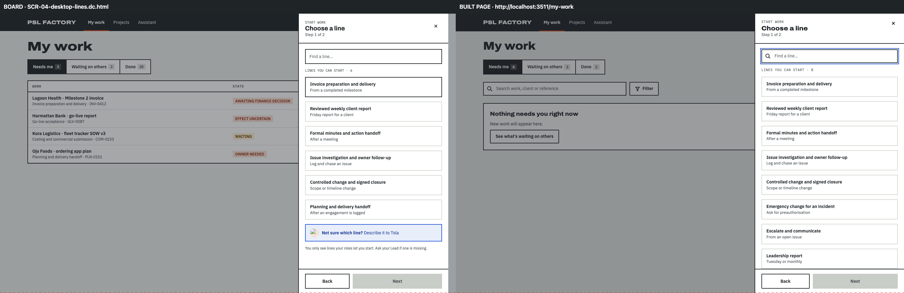
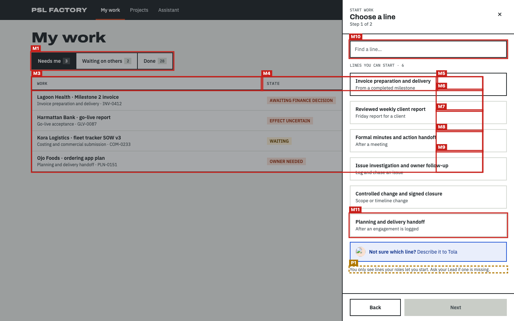
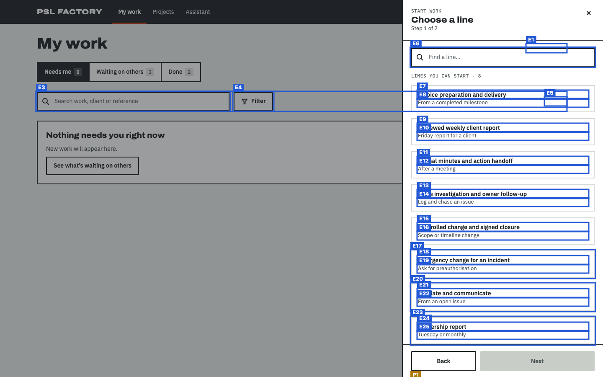
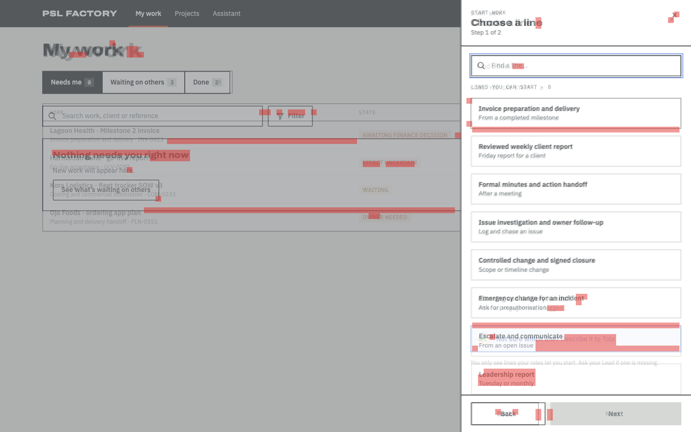

Does the built page follow the design?
Board SCR-04-desktop-lines.dc.html compared with http://localhost:3511/my-work at 1440px wide · 2026-11-14T06:45:33.279Z
- Every board item is on the page or approved as an exception (100%).
- Visual match 92.9 meets 90.
- 1 item(s) are in a different place; review them (not part of the pass rule unless --strict-position).
28 of 39 things drawn on the board were found on the page: headings, buttons, links, search and filter controls, table columns, labels and the repeated rows (counted once, not per row).
How closely the shapes line up: blocks, bars, tables and text areas, compared in 12px squares over the top 900px. Different words in the same place still count as a match, so sample data does not lower the score.
Missing from the built page 11
Drawn on the board but not found on the page. Each one must be built, or approved as an exception.
| # | What | Text on the board | Where on the board | Exception |
|---|---|---|---|---|
| M1 | Tabs | My work | left, 147px down | approved The My work page under the scrim, not F-05 (coordinator: ignore the page behind the drawer). · coordinator (overnight, provisional — see delivery/OVERNIGHT-DECISIONS.md D-16) |
| M2 | Table | (table) | middle, 217px down | approved The My work page under the scrim, not F-05 (coordinator: ignore the page behind the drawer). (an unnamed table: the report shows it as "(table)") · coordinator (overnight, provisional — see delivery/OVERNIGHT-DECISIONS.md D-16) |
| M3 | Table column | WORK | left, 217px down | approved The My work page under the scrim, not F-05 (coordinator: ignore the page behind the drawer). · coordinator (overnight, provisional — see delivery/OVERNIGHT-DECISIONS.md D-16) |
| M4 | Table column | STATE | right, 217px down | approved The My work page under the scrim, not F-05 (coordinator: ignore the page behind the drawer). · coordinator (overnight, provisional — see delivery/OVERNIGHT-DECISIONS.md D-16) |
| M5 | Table column | AGE | right, 217px down | approved The My work page under the scrim, not F-05 (coordinator: ignore the page behind the drawer). · coordinator (overnight, provisional — see delivery/OVERNIGHT-DECISIONS.md D-16) |
| M6 | Text | 2h | right, 252px down | approved The My work page under the scrim, not F-05 (coordinator: ignore the page behind the drawer). · coordinator (overnight, provisional — see delivery/OVERNIGHT-DECISIONS.md D-16) |
| M7 | Text | 40m | right, 310px down | approved The My work page under the scrim, not F-05 (coordinator: ignore the page behind the drawer). · coordinator (overnight, provisional — see delivery/OVERNIGHT-DECISIONS.md D-16) |
| M8 | Text | 1d | right, 367px down | approved The My work page under the scrim, not F-05 (coordinator: ignore the page behind the drawer). · coordinator (overnight, provisional — see delivery/OVERNIGHT-DECISIONS.md D-16) |
| M9 | Text | 3d | right, 424px down | approved The My work page under the scrim, not F-05 (coordinator: ignore the page behind the drawer). · coordinator (overnight, provisional — see delivery/OVERNIGHT-DECISIONS.md D-16) |
| M10 | Text | Find a line… | right, 114px down | approved Text inside a form control: the board draws the shown value as static text; the tool names a combobox, text field or date field by its label, so the value it shows cannot be matched. · coordinator (overnight, provisional — see delivery/OVERNIGHT-DECISIONS.md D-16) |
| M11 | Link | Planning and delivery handoff After an engagement is logged | right, 599px down | approved Out of scope (spec Not included: the Planning and delivery handoff line is FE-M4); E-LINES does not return it. · coordinator (overnight, provisional — see delivery/OVERNIGHT-DECISIONS.md D-16) |
In a different place 1
Found on both, but in a different order, side of the page, or area (for example inside the table frame instead of above it).
| # | What | How it moved |
|---|---|---|
| P1 | Text You only see lines your roles let you start. Ask your Lead if one is missing. |
|
Looks different 12
Found on both, but styled differently: table rows and cells, fonts, colours, underlines, outlines, corners. Not part of the score; check each one against the board.
| What | Difference |
|---|---|
| Link "Start work" |
|
| Link "More ways to start" |
|
| Heading "My work" |
|
| Text "Choose a line" |
|
| Link "Close" |
|
| Link "Invoice preparation and delivery From a completed milestone" |
|
| Link "Reviewed weekly client report Friday report for a client" |
|
| Link "Formal minutes and action handoff After a meeting" |
|
| Link "Issue investigation and owner follow-up Log and chase an issue" |
|
| Link "Controlled change and signed closure Scope or timeline change" |
|
| Link "Back" |
|
| Pagination "Next" |
|
On the page but not on the board 25
Built but not drawn. Some are expected (data, status lines); the rest need the design engineer to approve or remove them.
| # | What | Text on the page | Where on the page |
|---|---|---|---|
| E1 | Text | Updated 10:42 | right, 106px down |
| E2 | Search area | middle, 220px down | |
| E3 | Search box | Search | left, 220px down |
| E4 | Filter | Filter | middle, 220px down |
| E5 | Text | 0 ITEMS | right, 233px down |
| E6 | Search box | Find a line | right, 115px down |
| E7 | Text | Invoice preparation and delivery | right, 217px down |
| E8 | Text | From a completed milestone | right, 237px down |
| E9 | Text | Reviewed weekly client report | right, 296px down |
| E10 | Text | Friday report for a client | right, 316px down |
| E11 | Text | Formal minutes and action handoff | right, 375px down |
| E12 | Text | After a meeting | right, 395px down |
| E13 | Text | Issue investigation and owner follow-up | right, 454px down |
| E14 | Text | Log and chase an issue | right, 474px down |
| E15 | Text | Controlled change and signed closure | right, 533px down |
| E16 | Text | Scope or timeline change | right, 554px down |
| E17 | Option | Emergency change for an incidentAsk for preauthorisation | right, 598px down |
| E18 | Text | Emergency change for an incident | right, 612px down |
| E19 | Text | Ask for preauthorisation | right, 633px down |
| E20 | Option | Escalate and communicateFrom an open issue | right, 677px down |
| E21 | Text | Escalate and communicate | right, 691px down |
| E22 | Text | From an open issue | right, 712px down |
| E23 | Option | Leadership reportTuesday or monthly | right, 757px down |
| E24 | Text | Leadership report | right, 771px down |
| E25 | Text | Tuesday or monthly | right, 791px down |
Pictures
The red dashed line on the side-by-side marks how far down the visual score looks. On the marked board, red boxes are missing items (M). On the marked page, amber boxes moved (P) and blue boxes are extra (E). In the difference picture both screens are laid over each other and red squares are where the shapes do not line up.






Notes about this run
No problems rendering the board or loading the page.
Found on both (28)
| Navigation area | Main | |
| Text | PSL FACTORY | |
| Link | My work | |
| Link | Projects | |
| Link | Assistant | |
| Link | Start work | |
| Link | More ways to start | |
| Text | Tunde Bello · PMO | page: Tunde Bello · PM |
| Main area | ||
| Heading | My work | |
| Tab | Needs me 3 | page: Needs me 0 |
| Tab | Waiting on others 2 | page: Waiting on others 3 |
| Tab | Done 28 | page: Done 2 |
| dialog | Choose a line | |
| Text | START WORK | |
| Text | Choose a line | |
| Text | Step 1 of 2 | |
| Link | Close | |
| Text | LINES YOU CAN START · 6 | page: LINES YOU CAN START · 8 |
| Link | Invoice preparation and delivery From a completed milestone | page: Invoice preparation and deliveryFrom a completed milestone |
| Link | Reviewed weekly client report Friday report for a client | page: Reviewed weekly client reportFriday report for a client |
| Link | Formal minutes and action handoff After a meeting | page: Formal minutes and action handoffAfter a meeting |
| Link | Issue investigation and owner follow-up Log and chase an issue | page: Issue investigation and owner follow-upLog and chase an issue |
| Link | Controlled change and signed closure Scope or timeline change | page: Controlled change and signed closureScope or timeline change |
| Link | Not sure which line? Describe it to Tola | |
| Text | You only see lines your roles let you start. Ask your Lead if one is missing. | |
| Link | Back | |
| Pagination | Next |
How the scores are worked out
Element coverage. The board is drawn locally from its own template and sample data. From the drawn board the check lists everything a person sees or uses: page areas (navigation, main, search), headings, links, buttons, form fields with their labels, table column headers, filter, search and pagination controls and fixed labels. Rows drawn from sample data count once, as a pattern ("table rows with these columns"). Each item is looked for on the page by its kind and its words (ignoring capitals, curly quotes and small wording differences, at least 80% similar). Coverage is found ÷ drawn. Order is compared in reading order (top to bottom, left to right); an item is "moved" when it breaks the order, sits on the other side of the page, or sits inside a different area.
Visual match. Both full-page screenshots are compared in 12px squares after a light blur, over the board's height (900px; the page is 900px). Only squares with something in them count. A square matches when its colours line up, or when both have text or lines there. Score = matching ÷ counted squares (4176 of 4494). Over every square including empty background it would be 95.8.
Technical details
Board file: /Users/Hunchoo/psl-factory-worktrees/f-05/design/canvas/project/SCR-04-desktop-lines.dc.html
Viewport: 1440×900
Report data: report.json
Exceptions file: /Users/Hunchoo/psl-factory/delivery/features/F-05/fidelity-exceptions.json